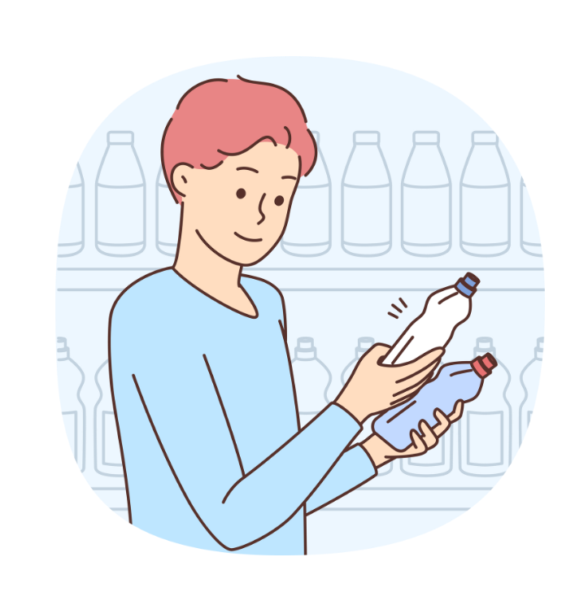
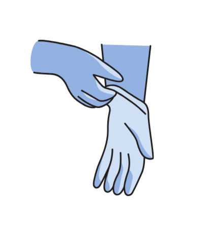
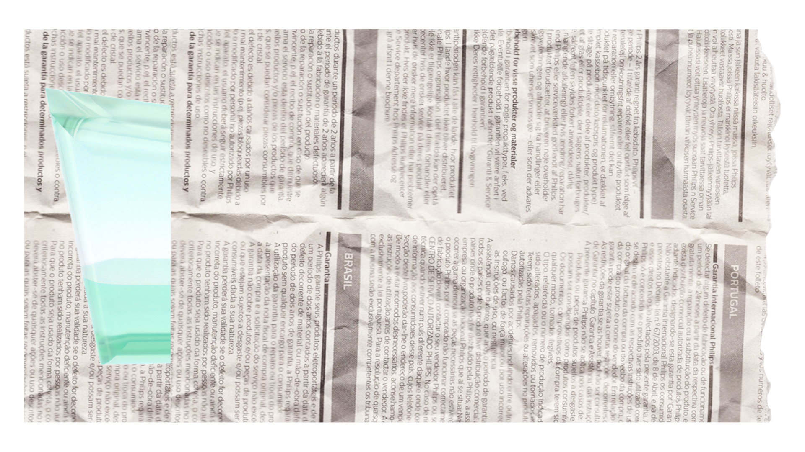
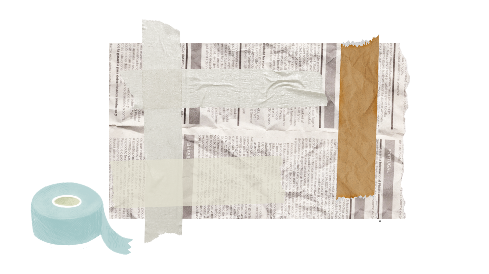
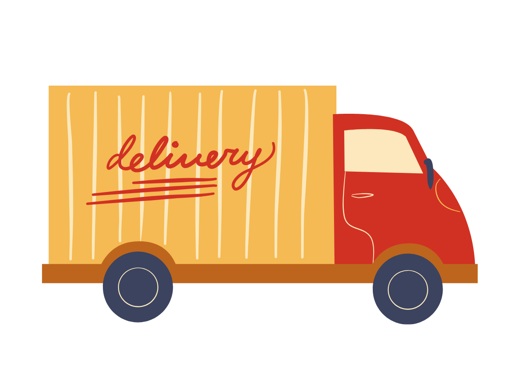

Flat glass such as window panes, mirrors, and glass tabletops should be taken to specialized recycling centers because they are processed differently from bottles and jars.

Inspect the glass for cracks or sharp edges before handling.
Wear gloves to protect your hands from cuts.
Wrap the glass securely with cardboard or several layers of newspaper.
Tape the wrapping to prevent the glass from shifting.
Transport the glass carefully to a designated glass recycling facility.